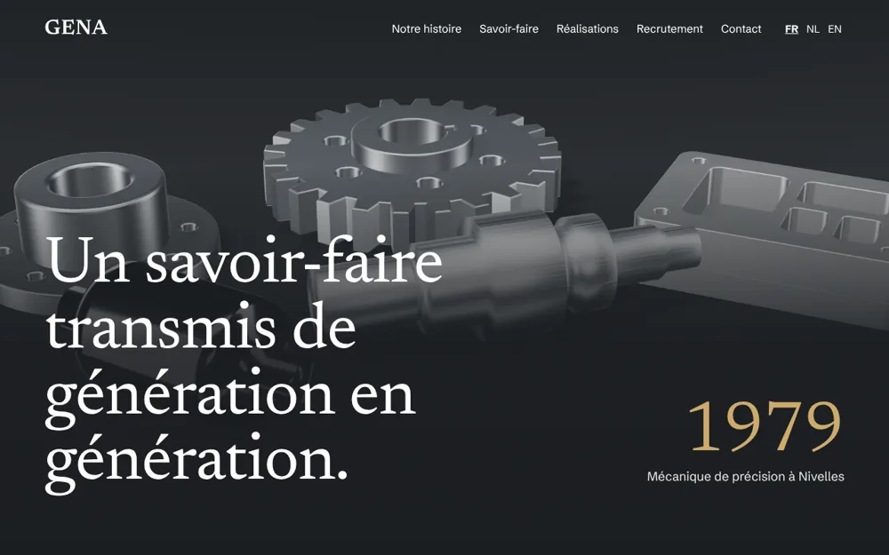
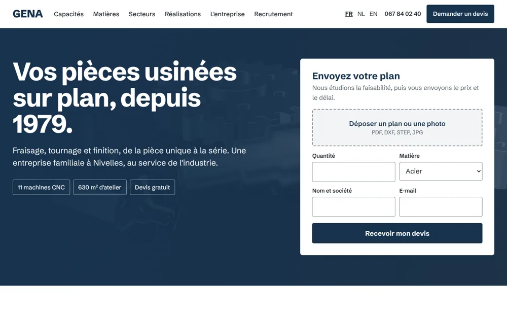
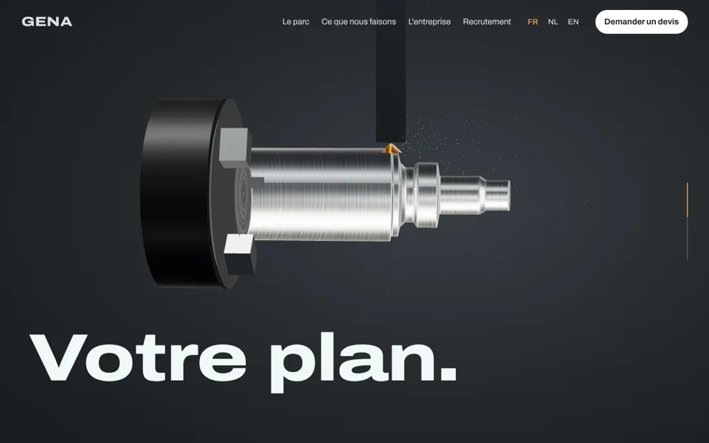
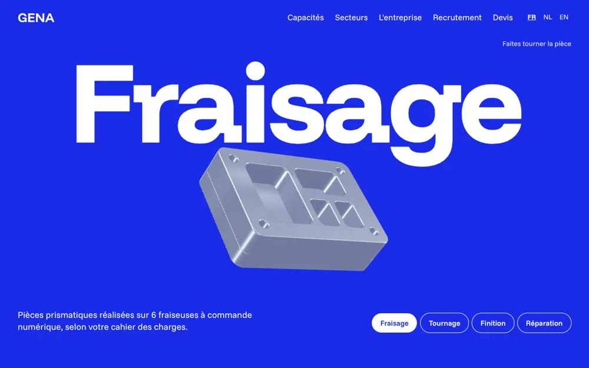
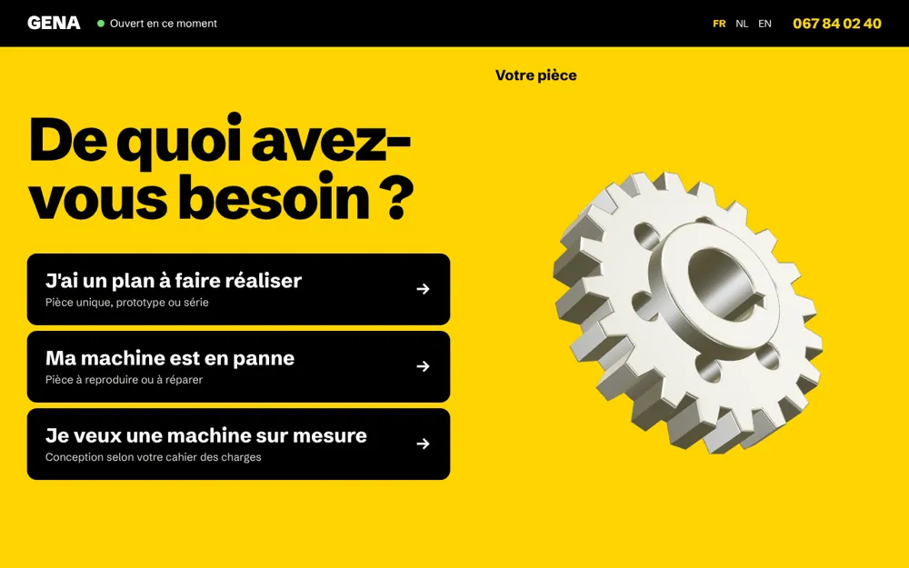
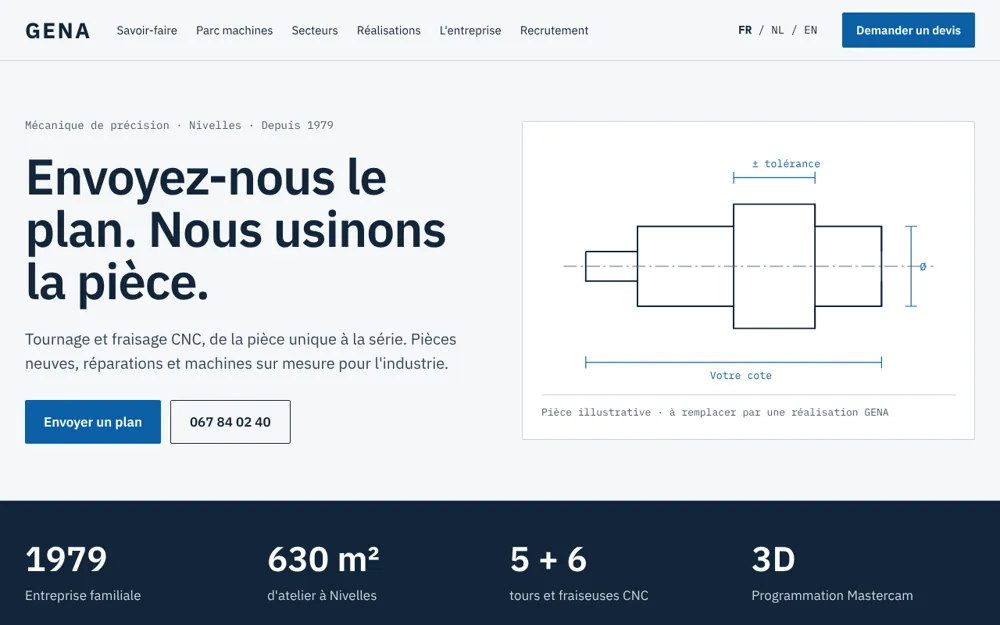
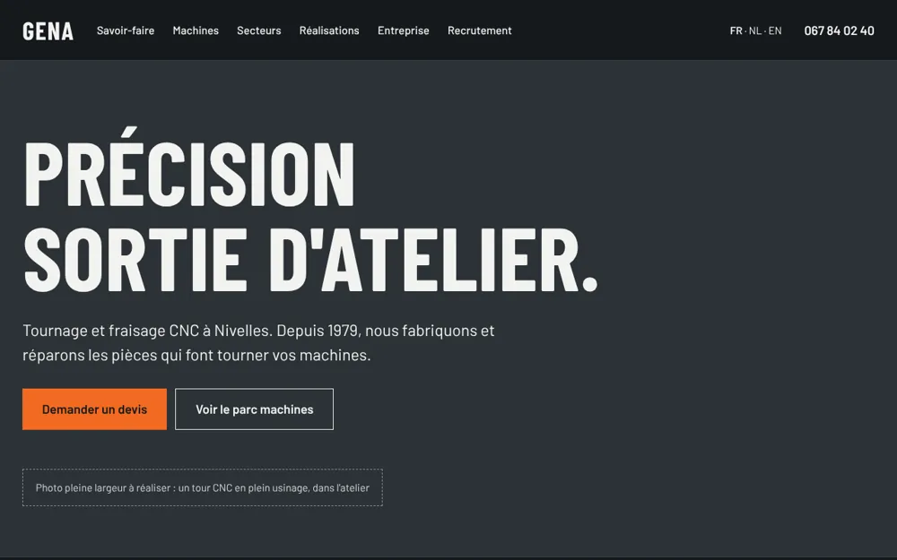
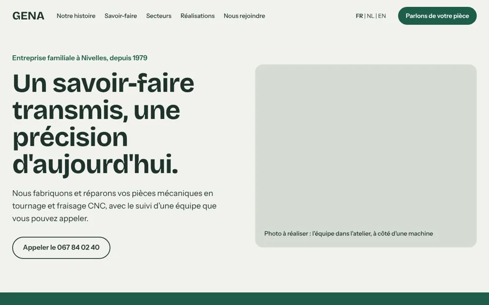

Huit pistes pour votre futur site
Ouvrez chaque piste et faites-la défiler comme un vrai site. Elles sont volontairement variées, pour vous aider à préciser vos goûts et vos priorités.

1. Héritage
Votre histoire et votre famille d'abord, dans un style sobre et élégant.
- Priorité
- La confiance et l'expérience
- Idéal si
- On vous choisit pour qui vous êtes

2. Référence
L'envoi du plan dès l'accueil, puis des capacités détaillées et faciles à comparer.
- Priorité
- Les demandes de devis
- Idéal si
- Vos clients sont acheteurs ou techniciens

3. Atelier
En faisant défiler la page, on voit une barre d'acier devenir une pièce. Le parc machines est au premier plan.
- Priorité
- Le savoir-faire et l'équipement
- Idéal si
- Votre atelier est votre meilleur argument
Pour élargir le tour d'horizon

Vitrine
Colorée et très moderne : chaque savoir-faire a sa couleur et une pièce à faire tourner.

Direct
Franche et efficace : une question, et l'on arrive tout de suite au devis ou à l'appel.

Le Plan
Technique et épurée, avec un dessin coté et un tableau des machines.

Industrie
Sombre et massive : de grands titres et les chiffres de l'atelier.

La Maison
Proche et chaleureuse : l'équipe, l'histoire et trois portes d'entrée simples.
Ce sont des maquettes : le logo, les couleurs et les pièces en 3D sont provisoires, et vos vraies photos y trouveront leur place. Les formulaires de démonstration n'envoient rien.
Et ensuite ?
Un questionnaire nous aide à comprendre ce que vous voulez vraiment. Comptez environ 20 minutes, en une ou plusieurs fois. Répondez à ce que vous savez, le reste est facultatif.
Répondre au questionnaire